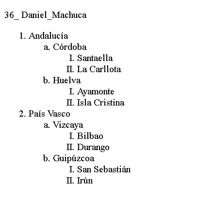
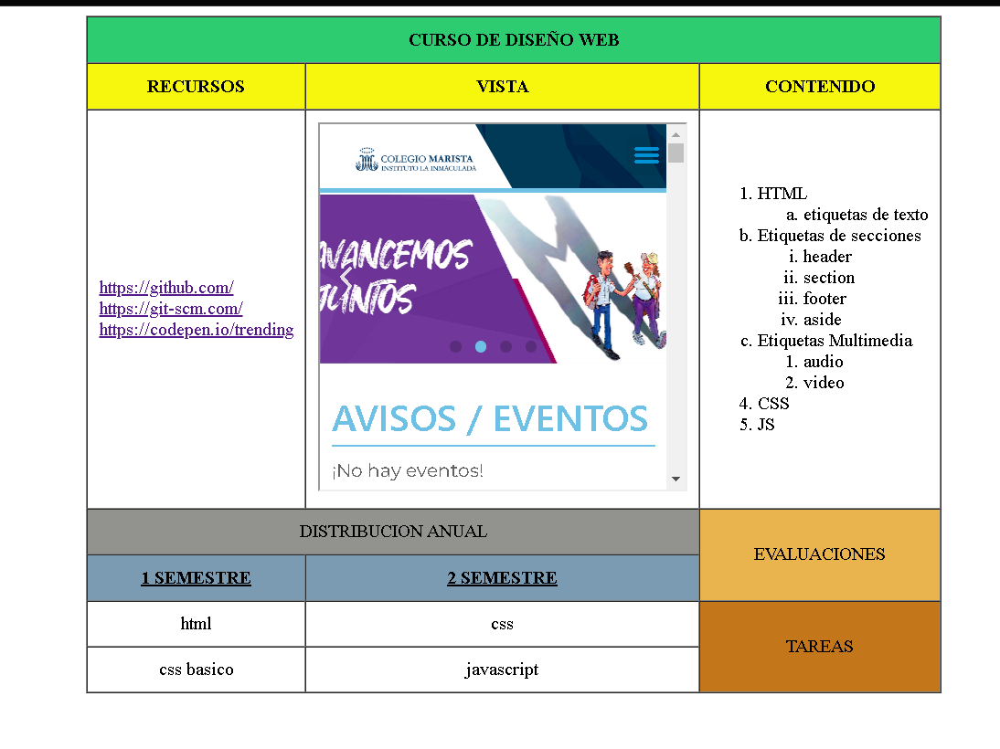
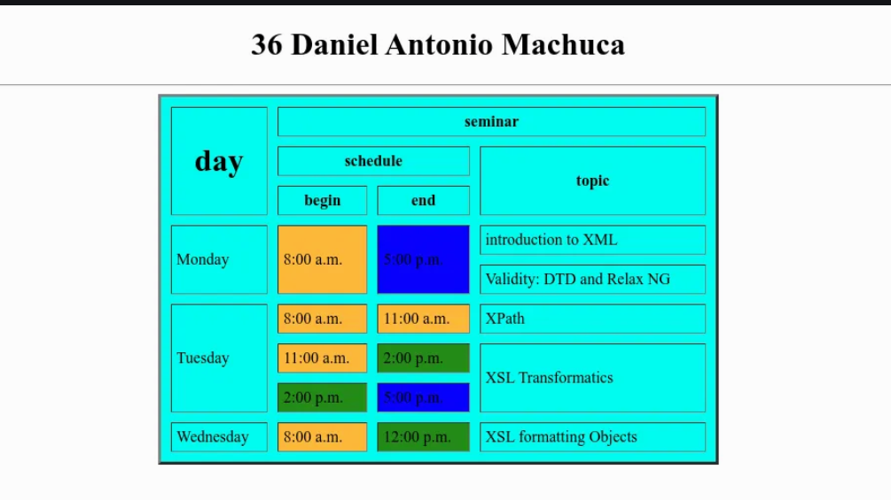

| Perfil Profesional | Contacto | Pasatiempos |
|
¿Quíen soy?Daniel Antonio es un estudiante que cursa el ultimo año de la carrera de Bachillerato Tecnico Profesional en Informatica en el Instituto Marista La imaculada en Comayagua, Honduras, en camino a la Universidad con el interes por el estudio de la Ingenieria en Sistemas, es apasionado por todo lo relacionado con la programación, las nuevas tecnologías y por todo lo que puede llegar a ser creado con estas, tambien le gustan los deportes en especial el "futbol" y los videojuegos. |
PROYECTOS |
|
|  |  |
|  | |
MI CIUDAD |